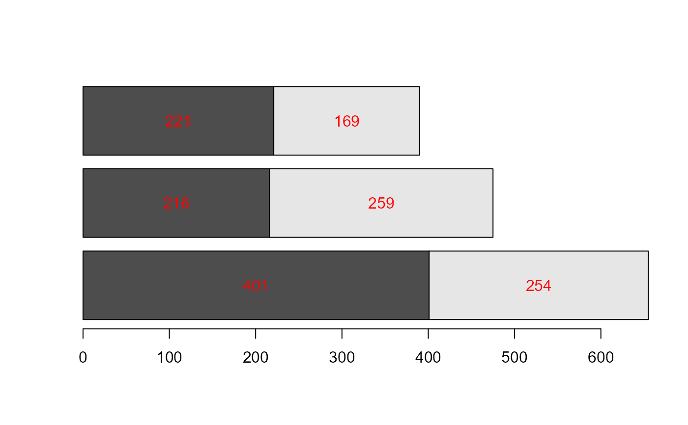

Compute the midpoints between consecutive elements of a numeric vector. This is useful, for example, when positioning labels in stacked bar plots.
Value
A numeric vector of length length(x) - 1 (or length(x)
if inclZero = TRUE) containing the midpoints. Returns an empty
numeric vector if fewer than two values are available.
Details
The midpoints are defined as: $$m_i = \frac{x_i + x_{i+1}}{2}$$
When inclZero = TRUE, the computation is performed on
c(0, x).
Examples
x <- c(1, 3, 6, 7)
midx(x)
#> [1] 2.0 4.5 6.5
midx(x, inclZero = TRUE)
#> [1] 0.5 2.0 4.5 6.5
midx(x, inclZero = TRUE, cumulate = TRUE)
#> [1] 0.5 2.5 7.0 13.5
# Example: label positions in a stacked bar plot
tab <- matrix(c(401,216,221,254,259,169), nrow = 2, byrow = TRUE)
b <- barplot(tab, beside = FALSE, horiz = TRUE)
xpos <- t(apply(tab, 2, midx, inclZero = TRUE, cumulate = TRUE))
text(x = xpos, y = b, labels = t(tab), col = "red")
